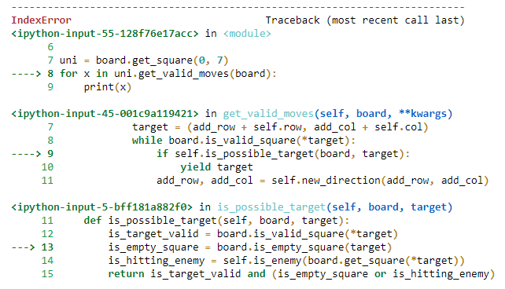
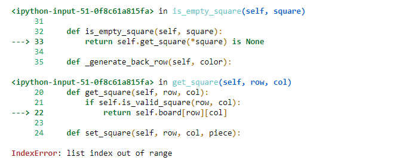

בשעה טובה הגעתי לתרגיל השחמט, אני חייב להודות כשקראתי את התרגיל לדוגמא המוח שלי עצר בערך ברבע הראשון ולא הצלחתי יותר לעכל כלום ממה שקורה שם, יכול להיות שזה רק אני אבל קשה לי מאוד לקרוא קוד ולהבין מה התפקיד של כל חלק, כל דבר קטן לוקח לי זמן, רק את המחלקה color לקח לי 10 דק’ להבין.
אני חושב שזה בגלל שהדרך לא יושבת לי בראש ואני מקבל רק את התשובה, להבדיל ממתי שאני בונה את הקוד ואני לאט לאט מצליח לעלות על דרכים להתמודד עם כל משימה.
בשביל זה אני רוצה לשאול / לבקש טיפים כלליים לאיך להיכנס לקוד ולהבין את התפקיד של כל חלק, ואם אפשר גם, ספציפית לתרגיל הזה, עזרה בלהבין את החלקים, למרות שאני קורא את התיעוד אני מרגיש כאילו יש לי חור שחור בתוך הראש והכל נעלם לא משנה כמה פעמים אני קורא.
תפתור את התרגיל בעצמך
ואז תשווה עם הקוד של התרגיל לדוגמא
ואז אתה תראה את ההבדלים
וכבר תבין את הקוד תוך כדי מעבר עליו…
לייק 1
DrorBiton
היום התחלתי להבין קצת איך עובד כל חלק בקוד, עדיין טיפה מעורפל אבל מתחיל להבין איך לשחק עם כל חלק כדי לשנות אותו בהתאם לצרכים שלי.
מס’ שאלות:
1 - בנוגע לגנו, אני לא בטוח איך להגדיר לו שיוכל לבחור בכל פעם אם הוא רוצה את התכונות של פרש או של גמל, אני מבין שהוא יצטרך לרשת משניהם, ובשביל התרגיל אני מעוניין להשתמש במודול random כדי לבחור ביניהם, אבל איך אני יכול להגדיר שבכל פעם הוא יבחר באופן רנדומלי מאיזה מחלקה לרשת.
חשבתי על אופציה שהוא יגריל ולאחר מכן בהתאם ירש ישירות מהמחלקה (ולא באמצעות super) אבל אני לא בטוח איך לוודא שהוא בכל פעם יגריל מחדש, מה גם שאני לא בטוח אם אפשר להגיד:
def __init__(self, **kwargs):
if self.raffle == 'camel':
Camel.__init__(**kwargs)
else:
Geno.__init__(**kwargs)
דבר נוסף, אני מחפש דרך יעילה להרכיב את המחלקה של החד קרן,
אני מבין שאני יכול להכפיל את התנועות של הפרש בכל פעם (כפול 2, כפול 3 וכן הלאה) אבל אני מחפש דרך יעילה שתדע לעבוד לפי גודל הלוח במידה וירצו להגדיל אותו בעתיד.
אולי לקחת את גובה/רוחב הלוח (לא בטוח מי מביניהם), לחלק ב-2 כיוון שהקפיצות של פרש הן 2 צעדים לכיוון אחד ולהגדיר שיבדוק על כולם אם הצעדים חוקיים?
הסיבה לחלוקה ב-2 היא כי אני לא רוצה שהקוד יצטרך לרוץ ולשמור נתונים לרשימה סתם אם הם גם ככה לא יהיו חוקיים לתנועה.
אני לא בטוח על הגובה/רוחב כיוון שאני חשוב מה אם מישהו אחר בעתיד יחליט להגדיר את הלוח עם הבדל משמעותי בין הרוחב והגובה, לדוג’ יכפיל את השורות הריקות, כמו עם החלוקה ב-2, אני לא רוצה שהקוד ירוץ ויאגור נתונים סתם ושלאחר מכן הם לא יהיו חוקיים גם ככה.
zurikarat
לגבי הגנו, הוא לא “בוחר” - הוא כן, אבל לא איך שאתה עושה, אתה פשוט מציב לו גם את האפשרויות לצעד של גמל וגם את האפשרויות לצעד של פרש, את לא מגריל ביניהם (גמל ופרש).
zurikarat
לדוגמה:
צעד של פרש - (1,2)
צעד של גמל - (3,1)
אז לגנו יהיה ((1,2), (3,1))
לייק 1
DrorBiton
אז בעצם המטרה שלי פה בתרגיל היא לא להראות שאני מבין איך לממש משחק שחמט, אלא שאני מבין איך להיכנס לקוד ולשנות אותו לצרכים שלי?
כי אם אני מבין אותך נכון מה שאני צריך לעשות עם גנו זה פשוט ------.
Yam
מבקש שוב לא לפרסם פתרונות בפורום.
וכן, חלק גדול מהמטרה של התרגיל זה להרגיל אתכם לכניסה לקוד של אחרים.
DrorBiton
סליחה ברח לי מהראש אני אחרי עבודה ולא מרוכז.
תודה!
zurikarat
אתה יכול (וים כתב שאף רצוי) לכתוב בעצמך את הקוד למשחק,
אבל אם נכנסת לקוד המוכן, אז תצטרך להבין אותו…
DrorBiton
הלוואי והיה לי זמן לזה, אולי בעתיד אבל כרגע זה גדול עליי מדי, אני גם אוהב לתרגל עצמי בלהיכנס לקוד כיוון שזה חלק שאני מתקשה בו, בדרך כלל כשזה קוד שלא אני כתבתי כבר במשפט השני אני מוצא את עצמי בוהה במסך ומאבד את כל הריכוז.
בכל אופן, חוזר לשאלת החד-קרן, עלה לי רעיון שעבור כל אחד מהכיוונים של של צעד פרש, כל עוד הם בתוך הטווח של של הלוח, להוסיף אותם לרשימה ולאחר מכן להכפיל וכך בעצם הרצף יחזור עד שהוא יצא מהטווח עבור כל כיוון.
הבעיה שאני מנסה להגדיר את זה עם הפעולה שקיימת ללוח:
board.is_valid_square(row, col)
כיוון שהמחלקה unicorn לא קיבלה את המשתנה board, אני לא יכול להגדיר:
self.directions = self.get_directions(board)
כדי לפשט את התהליך, אני לא רוצה להוסיף לכל הכלים את board כמשתנה, זה גם מיותר כיוון שהם חלק מהלוח ולא ההפך במקרה של התרגיל, אבל אני כן מעוניין להשתמש בלוח כטווח, במיוחד כשיש לו אופציה קיימת שיכולה לעשות את העבודה שאני צריך.
מבדיקה זריזה, ברוב מחלקות הכלים המשתנה board קיים כפרמטר מחוץ לפונקציה init, אבל רק בחד קרן מצאתי צורך להשתמש בו בתוך ה init, אם כך איך אני יכול לעקוף את זה?
eyalmerav
אתה יכול ליצור רק לחד קרן תכונה (שדה) ששומרת בתוכה את גודל הלוח…אני מאמין שזה יפתור את הבעיה
DrorBiton
הבעיה היא שאני מנסה להכניס אותו כחלק בלוח, וכיוון שכל החלקים בלוח לא מקבלים אותו אני לא מוצא דרך לתת לו שכן יקבל.
ניסיתי לאפשר לכולם לקבל גם את הלוח, אבל רק מצאתי את עצמי נכנס לבור של בעיות שלא נגמר ועד שחשבתי שפתרתי משהו גיליתי דבר אחר.
DrorBiton
עריכה:
הבנתי שסתם סיבכתי הכל ושלא הייתי צריך לעשות את כל השינויים שעשיתי לכיוונים של החד קרן, ובעצם שהדבר היחידי שמשתנה הוא המיקומים האפשריים.
בניסיון הרצה ובדיקה של כל הצעדים האפשריים אני נתקל בבעיה שאני לא מצליח להסביר.
שיניתי את הקוד כך שכל עוד מדובר במטרה חוקית שקיימת בלוח, אם המטרה אפשרית בהתחשב במצב הלוח הנוכחי.
בעיה אחרת: (מצטער שזה ב2 תמונות)


תקוע עליה כבר לפחות שעה ולא מצליח לעלות שום דרך לפתור אותה.
אני חושב שמדובר בבעיה שהפעולה is_valid_square של הלוח מתייחסת עפ"י אורך של השורה והעמודה לעומת set_square שמתייחסת לפי אינדקס.
הבעיה שלי שהן פעולות בסיסיות שהגיעו עם הלוח ולכן אני לא מעוניין לשנות אותן, כיוון שאני לא רוצה שזה יעשה לי בעיות אחרות בקוד ואני אכנס ללופ שלא יגמר.
ובהתחשב בכך שאני מאבד את הריכוז כל 5 דקות, אשמח אם תוכלו לכוון אותי לדרך אחרת לפתור את המכשול הזה.
המטרה:
בקוד של החד קרן, כשאני מבקש צעדים אפשריים, אני רוצה שהקוד יוכל לבדוק עבור כל כיוון עד סוף טווח הלוח, לאחר מכן אם הצעד אפשרי (לפי הקריטריונים) אקבל אותו.
devorack
כדי לזהות את מקור השגיאה, אני חושבת שהייתי מתחילה כך:
האם זה עובד עבור חלק מה x-ים?
כן.
אם כן, אז אתה אמור לקבל הדפסה של xים מסוימים, כשהאחרונה בהם היא לפני השגיאה, ואז תוכל לראות מה האינדקסים שגורמים לשגיאה.
לא.
אם לא, אז משהו באיך שx מוגדר, או הפעולות שמתבצעות לפני שx מוגדר לא יכול להתקיים
זה מה שיש לי, שם הייתי מתחילה בכל אופן, אח’כ אולי בהוספת הדפסות במקומות ספציפיים שאני חושדת בהם שהם מקור הבעייה גם אם בקוד המקורי - כך אפשר קצת לעקוב בלי לשנות אותו (אני שמה הערה ליד שורת הדפסה כך שאשים לב למחוק אח’כ)
לייק 1
DrorBiton
מצאתי פתרון שאני לא כל כך שמח ממנו, אבל בהרצה של בדיקות נראה שהוא עובד.
פשוט החסרתי 1 בפעולה שבודקת אם הריבוע חוקי.
זה עובד, אבל אני לא מרוצה כי רציתי לא לשנות שום חלק בקוד המקורי, אך עד כה נראה שאין בעיה.
בעיה אחרונה שנתקלתי בה, משום מה הלוח לא מצליח לזהות את העמודה האחרונה וקורא כאילו היא לא קיימת
מה שמוזר לי הוא שלהבדיל מהבעיה הקודמת שהייתה לי שהפונקציה יצאה מהטווח, כאן הוא כן בטווח ואני יכול גם לספור את הטווח הזה, יותר מוזר לי מזה, את השורה האחרונה הוא כן מצליח לזהות.